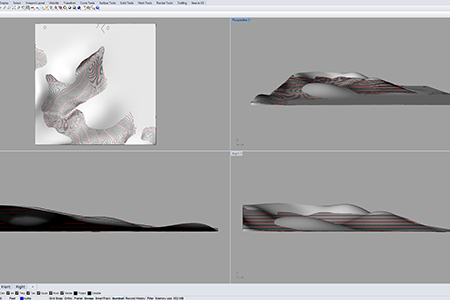
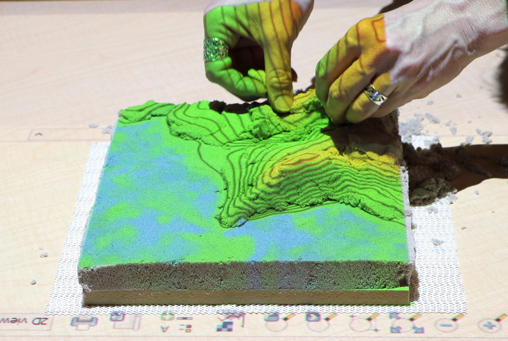
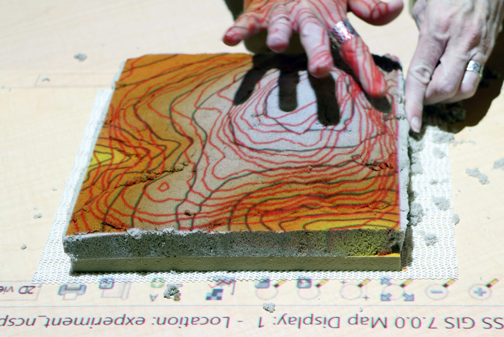
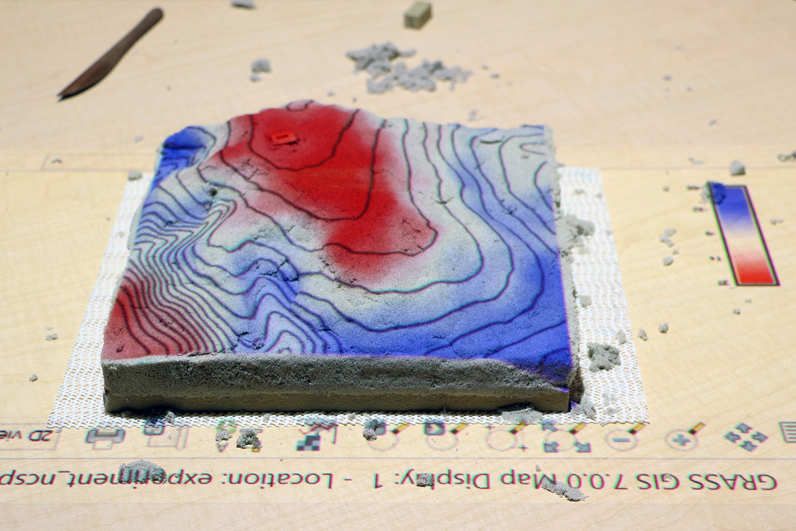
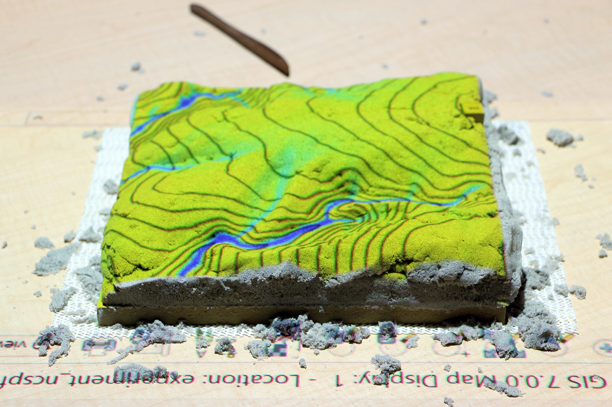
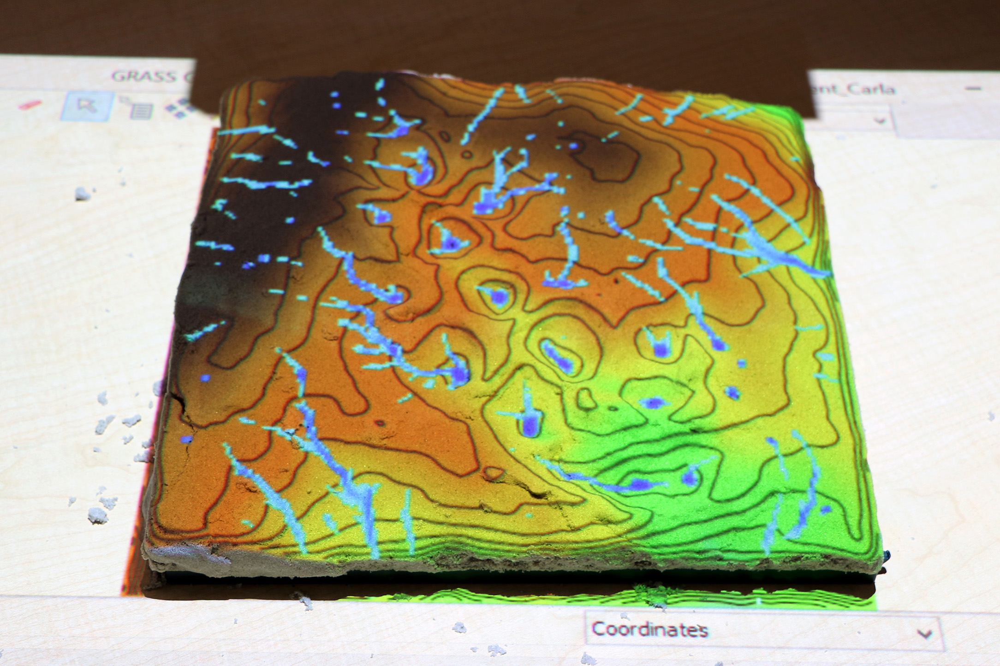

Experiment Design
-

1. Sculpt a given terrain in a digital 3D modeling program using the contours as a guide
-

2. Sculpt a given terrain in sand using the contours as a guide
-

3. Sculpt a given terrain in sand using the contours and scanned contours as a guide
-

4. Sculpt a given terrain in sand using the difference as a guide
-

5. Sculpt a given terrain in sand using the simulated water flow as a guide
-

6. Design a given landscape to minimize concentrated flow